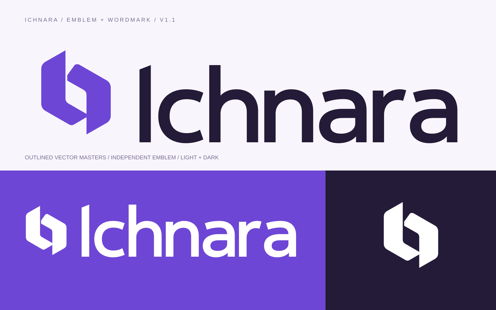

مقترحات فقط. الشعار وألوان الواجهة الحالية لم تتغير. التوصية الأولية: I1 وA1 واللون C1؛ القرار لك بعد المعاينة.
التهجئة «إيكنارا» افتراض للمراجعة وليست اسماً عربياً معتمداً منك. الحروف مشتقة من خطوط Noto مرخّصة، وليست خطاً حصرياً مرسوماً من الصفر.
#3F46C8 · الأبيض 7.19:1#853DAD · الأبيض 6.43:1الأول يميل للأزرق، والثاني للأرجواني. الاختلاف اللوني لا يثبت زوال انطباع التشابه. على الخلفية الداكنة استخدم النسخة البيضاء؛ اللونان لا يحققان 4.5:1 عليها.
| الخيار | الخلفية | التباين | AA نص عادي 4.5 | نص كبير/عنصر واجهة 3 |
|---|---|---|---|---|
| C1-indigo | white #FFFFFF | 7.19:1 | يمر | يمر |
| C1-indigo | brand-ink #241B38 | 2.27:1 | لا يمر | لا يمر |
| C1-indigo | UI-ink #242137 | 2.17:1 | لا يمر | لا يمر |
| C1-indigo | paper #FAF9FC | 6.85:1 | يمر | يمر |
| C1-indigo | landing #FAF8FC | 6.81:1 | يمر | يمر |
| C1-indigo | soft #F0EAFB | 6.12:1 | يمر | يمر |
| C1-indigo | overview #F8F6FC | 6.70:1 | يمر | يمر |
| C1-indigo | surface-5933BF #5933BF | 1.10:1 | لا يمر | لا يمر |
| C1-indigo | surface-F7F4FC #F7F4FC | 6.61:1 | يمر | يمر |
| C1-indigo | surface-FFF3F3 #FFF3F3 | 6.63:1 | يمر | يمر |
| C1-indigo | surface-8C66DC #8C66DC | 1.73:1 | لا يمر | لا يمر |
| C1-indigo | surface-F2ECFC #F2ECFC | 6.22:1 | يمر | يمر |
| C1-indigo | surface-F7F4FB #F7F4FB | 6.60:1 | يمر | يمر |
| C1-indigo | surface-F8F5FC #F8F5FC | 6.66:1 | يمر | يمر |
| C1-indigo | surface-F0E9FB #F0E9FB | 6.08:1 | يمر | يمر |
| C1-indigo | surface-F9F7FC #F9F7FC | 6.76:1 | يمر | يمر |
| C1-indigo | surface-EEE6F7 #EEE6F7 | 5.92:1 | يمر | يمر |
| C1-indigo | surface-FFF2F2 #FFF2F2 | 6.58:1 | يمر | يمر |
| C1-indigo | surface-EDF7F0 #EDF7F0 | 6.56:1 | يمر | يمر |
| C1-indigo | surface-F4EFFB #F4EFFB | 6.36:1 | يمر | يمر |
| C1-indigo | surface-F3EDF9 #F3EDF9 | 6.26:1 | يمر | يمر |
| C1-indigo | surface-F0EDF5 #F0EDF5 | 6.21:1 | يمر | يمر |
| C1-indigo | surface-E9E3F0 #E9E3F0 | 5.72:1 | يمر | يمر |
| C1-indigo | surface-FCFBFD #FCFBFD | 6.97:1 | يمر | يمر |
| C1-indigo | surface-E0D6E9 #E0D6E9 | 5.12:1 | يمر | يمر |
| C1-indigo | surface-EACBCE #EACBCE | 4.77:1 | يمر | يمر |
| C1-indigo | surface-EBDFBC #EBDFBC | 5.41:1 | يمر | يمر |
| C1-indigo | surface-CCDCCA #CCDCCA | 5.02:1 | يمر | يمر |
| C1-indigo | surface-F7F6FA #F7F6FA | 6.68:1 | يمر | يمر |
| C1-indigo | surface-242131 #242131 | 2.19:1 | لا يمر | لا يمر |
| C1-indigo | surface-F1E8DB #F1E8DB | 5.92:1 | يمر | يمر |
| C1-indigo | surface-A392BD #A392BD | 2.53:1 | لا يمر | لا يمر |
| C1-indigo | surface-70588E #70588E | 1.19:1 | لا يمر | لا يمر |
| C1-indigo | surface-5C516E #5C516E | 1.02:1 | لا يمر | لا يمر |
| C1-indigo | surface-C8B3E7 #C8B3E7 | 3.79:1 | لا يمر | يمر |
| C1-indigo | surface-C1AE97 #C1AE97 | 3.34:1 | لا يمر | يمر |
| C1-indigo | surface-786655 #786655 | 1.31:1 | لا يمر | لا يمر |
| C1-indigo | surface-7351BB #7351BB | 1.24:1 | لا يمر | لا يمر |
| C1-indigo | surface-246BB1 #246BB1 | 1.31:1 | لا يمر | لا يمر |
| C1-indigo | surface-267250 #267250 | 1.23:1 | لا يمر | لا يمر |
| C1-indigo | surface-B84F6A #B84F6A | 1.49:1 | لا يمر | لا يمر |
| C1-indigo | surface-F7F2FC #F7F2FC | 6.52:1 | يمر | يمر |
| C1-indigo | surface-F8F6FB #F8F6FB | 6.70:1 | يمر | يمر |
| C1-indigo | surface-F0E9FA #F0E9FA | 6.07:1 | يمر | يمر |
| C1-indigo | surface-FCFBFE #FCFBFE | 6.97:1 | يمر | يمر |
| C1-indigo | surface-F4EFFC #F4EFFC | 6.37:1 | يمر | يمر |
| C1-indigo | surface-EEE7F6 #EEE7F6 | 5.95:1 | يمر | يمر |
| C1-indigo | surface-9B79DB #9B79DB | 2.11:1 | لا يمر | لا يمر |
| C1-indigo | surface-FFF4F2 #FFF4F2 | 6.67:1 | يمر | يمر |
| C1-indigo | surface-F9F6FF #F9F6FF | 6.73:1 | يمر | يمر |
| C1-indigo | surface-F7F3FC #F7F3FC | 6.57:1 | يمر | يمر |
| C1-indigo | surface-F5F2F8 #F5F2F8 | 6.48:1 | يمر | يمر |
| C1-indigo | surface-F2EDF7 #F2EDF7 | 6.24:1 | يمر | يمر |
| C1-indigo | surface-F0E8FB #F0E8FB | 6.04:1 | يمر | يمر |
| C1-indigo | surface-F5F3F8 #F5F3F8 | 6.52:1 | يمر | يمر |
| C1-indigo | surface-F1EBFF #F1EBFF | 6.18:1 | يمر | يمر |
| C1-indigo | surface-FFF0F1 #FFF0F1 | 6.50:1 | يمر | يمر |
| C1-indigo | surface-5E38BF #5E38BF | 1.05:1 | لا يمر | لا يمر |
| C1-indigo | surface-EEE9FF #EEE9FF | 6.07:1 | يمر | يمر |
| C1-indigo | surface-F4F1FA #F4F1FA | 6.44:1 | يمر | يمر |
| C1-indigo | surface-F0EDF6 #F0EDF6 | 6.21:1 | يمر | يمر |
| C1-indigo | surface-EDF7F1 #EDF7F1 | 6.56:1 | يمر | يمر |
| C1-indigo | surface-FFF3E6 #FFF3E6 | 6.58:1 | يمر | يمر |
| C1-indigo | surface-FFF0F0 #FFF0F0 | 6.49:1 | يمر | يمر |
| C1-indigo | surface-F5F0FC #F5F0FC | 6.42:1 | يمر | يمر |
| C1-indigo | surface-ECEAF2 #ECEAF2 | 6.03:1 | يمر | يمر |
| C1-indigo | surface-ECF6F0 #ECF6F0 | 6.51:1 | يمر | يمر |
| C1-indigo | surface-EEEAF7 #EEEAF7 | 6.08:1 | يمر | يمر |
| C1-indigo | surface-7045CE #7045CE | 1.17:1 | لا يمر | لا يمر |
| C1-indigo | surface-FFF3F1 #FFF3F1 | 6.62:1 | يمر | يمر |
| C1-indigo | surface-F7F7FB #F7F7FB | 6.73:1 | يمر | يمر |
| C1-indigo | surface-F0EAFA #F0EAFA | 6.11:1 | يمر | يمر |
| C1-indigo | surface-EEE7F9 #EEE7F9 | 5.97:1 | يمر | يمر |
| C1-indigo | surface-F7F5FB #F7F5FB | 6.64:1 | يمر | يمر |
| C1-indigo | surface-30213F #30213F | 2.06:1 | لا يمر | لا يمر |
| C2-plum | white #FFFFFF | 6.43:1 | يمر | يمر |
| C2-plum | brand-ink #241B38 | 2.54:1 | لا يمر | لا يمر |
| C2-plum | UI-ink #242137 | 2.42:1 | لا يمر | لا يمر |
| C2-plum | paper #FAF9FC | 6.13:1 | يمر | يمر |
| C2-plum | landing #FAF8FC | 6.09:1 | يمر | يمر |
| C2-plum | soft #F0EAFB | 5.47:1 | يمر | يمر |
| C2-plum | overview #F8F6FC | 5.99:1 | يمر | يمر |
| C2-plum | surface-5933BF #5933BF | 1.23:1 | لا يمر | لا يمر |
| C2-plum | surface-F7F4FC #F7F4FC | 5.91:1 | يمر | يمر |
| C2-plum | surface-FFF3F3 #FFF3F3 | 5.93:1 | يمر | يمر |
| C2-plum | surface-8C66DC #8C66DC | 1.54:1 | لا يمر | لا يمر |
| C2-plum | surface-F2ECFC #F2ECFC | 5.56:1 | يمر | يمر |
| C2-plum | surface-F7F4FB #F7F4FB | 5.90:1 | يمر | يمر |
| C2-plum | surface-F8F5FC #F8F5FC | 5.95:1 | يمر | يمر |
| C2-plum | surface-F0E9FB #F0E9FB | 5.43:1 | يمر | يمر |
| C2-plum | surface-F9F7FC #F9F7FC | 6.04:1 | يمر | يمر |
| C2-plum | surface-EEE6F7 #EEE6F7 | 5.29:1 | يمر | يمر |
| C2-plum | surface-FFF2F2 #FFF2F2 | 5.89:1 | يمر | يمر |
| C2-plum | surface-EDF7F0 #EDF7F0 | 5.86:1 | يمر | يمر |
| C2-plum | surface-F4EFFB #F4EFFB | 5.69:1 | يمر | يمر |
| C2-plum | surface-F3EDF9 #F3EDF9 | 5.60:1 | يمر | يمر |
| C2-plum | surface-F0EDF5 #F0EDF5 | 5.55:1 | يمر | يمر |
| C2-plum | surface-E9E3F0 #E9E3F0 | 5.11:1 | يمر | يمر |
| C2-plum | surface-FCFBFD #FCFBFD | 6.23:1 | يمر | يمر |
| C2-plum | surface-E0D6E9 #E0D6E9 | 4.58:1 | يمر | يمر |
| C2-plum | surface-EACBCE #EACBCE | 4.26:1 | لا يمر | يمر |
| C2-plum | surface-EBDFBC #EBDFBC | 4.84:1 | يمر | يمر |
| C2-plum | surface-CCDCCA #CCDCCA | 4.48:1 | لا يمر | يمر |
| C2-plum | surface-F7F6FA #F7F6FA | 5.97:1 | يمر | يمر |
| C2-plum | surface-242131 #242131 | 2.44:1 | لا يمر | لا يمر |
| C2-plum | surface-F1E8DB #F1E8DB | 5.30:1 | يمر | يمر |
| C2-plum | surface-A392BD #A392BD | 2.27:1 | لا يمر | لا يمر |
| C2-plum | surface-70588E #70588E | 1.06:1 | لا يمر | لا يمر |
| C2-plum | surface-5C516E #5C516E | 1.14:1 | لا يمر | لا يمر |
| C2-plum | surface-C8B3E7 #C8B3E7 | 3.38:1 | لا يمر | يمر |
| C2-plum | surface-C1AE97 #C1AE97 | 2.99:1 | لا يمر | لا يمر |
| C2-plum | surface-786655 #786655 | 1.17:1 | لا يمر | لا يمر |
| C2-plum | surface-7351BB #7351BB | 1.11:1 | لا يمر | لا يمر |
| C2-plum | surface-246BB1 #246BB1 | 1.17:1 | لا يمر | لا يمر |
| C2-plum | surface-267250 #267250 | 1.10:1 | لا يمر | لا يمر |
| C2-plum | surface-B84F6A #B84F6A | 1.34:1 | لا يمر | لا يمر |
| C2-plum | surface-F7F2FC #F7F2FC | 5.83:1 | يمر | يمر |
| C2-plum | surface-F8F6FB #F8F6FB | 5.99:1 | يمر | يمر |
| C2-plum | surface-F0E9FA #F0E9FA | 5.43:1 | يمر | يمر |
| C2-plum | surface-FCFBFE #FCFBFE | 6.23:1 | يمر | يمر |
| C2-plum | surface-F4EFFC #F4EFFC | 5.69:1 | يمر | يمر |
| C2-plum | surface-EEE7F6 #EEE7F6 | 5.32:1 | يمر | يمر |
| C2-plum | surface-9B79DB #9B79DB | 1.88:1 | لا يمر | لا يمر |
| C2-plum | surface-FFF4F2 #FFF4F2 | 5.96:1 | يمر | يمر |
| C2-plum | surface-F9F6FF #F9F6FF | 6.01:1 | يمر | يمر |
| C2-plum | surface-F7F3FC #F7F3FC | 5.87:1 | يمر | يمر |
| C2-plum | surface-F5F2F8 #F5F2F8 | 5.79:1 | يمر | يمر |
| C2-plum | surface-F2EDF7 #F2EDF7 | 5.58:1 | يمر | يمر |
| C2-plum | surface-F0E8FB #F0E8FB | 5.40:1 | يمر | يمر |
| C2-plum | surface-F5F3F8 #F5F3F8 | 5.83:1 | يمر | يمر |
| C2-plum | surface-F1EBFF #F1EBFF | 5.53:1 | يمر | يمر |
| C2-plum | surface-FFF0F1 #FFF0F1 | 5.81:1 | يمر | يمر |
| C2-plum | surface-5E38BF #5E38BF | 1.17:1 | لا يمر | لا يمر |
| C2-plum | surface-EEE9FF #EEE9FF | 5.43:1 | يمر | يمر |
| C2-plum | surface-F4F1FA #F4F1FA | 5.76:1 | يمر | يمر |
| C2-plum | surface-F0EDF6 #F0EDF6 | 5.55:1 | يمر | يمر |
| C2-plum | surface-EDF7F1 #EDF7F1 | 5.87:1 | يمر | يمر |
| C2-plum | surface-FFF3E6 #FFF3E6 | 5.88:1 | يمر | يمر |
| C2-plum | surface-FFF0F0 #FFF0F0 | 5.81:1 | يمر | يمر |
| C2-plum | surface-F5F0FC #F5F0FC | 5.74:1 | يمر | يمر |
| C2-plum | surface-ECEAF2 #ECEAF2 | 5.39:1 | يمر | يمر |
| C2-plum | surface-ECF6F0 #ECF6F0 | 5.82:1 | يمر | يمر |
| C2-plum | surface-EEEAF7 #EEEAF7 | 5.43:1 | يمر | يمر |
| C2-plum | surface-7045CE #7045CE | 1.05:1 | لا يمر | لا يمر |
| C2-plum | surface-FFF3F1 #FFF3F1 | 5.92:1 | يمر | يمر |
| C2-plum | surface-F7F7FB #F7F7FB | 6.01:1 | يمر | يمر |
| C2-plum | surface-F0EAFA #F0EAFA | 5.46:1 | يمر | يمر |
| C2-plum | surface-EEE7F9 #EEE7F9 | 5.33:1 | يمر | يمر |
| C2-plum | surface-F7F5FB #F7F5FB | 5.94:1 | يمر | يمر |
| C2-plum | surface-30213F #30213F | 2.31:1 | لا يمر | لا يمر |

لا يوجد فحص قانوني للاسم أو الرمز، ولا دراسة مستقلة تثبت نجاح التصميم. القياسات والمصادر · لوحة المقارنة